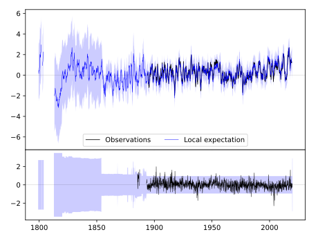
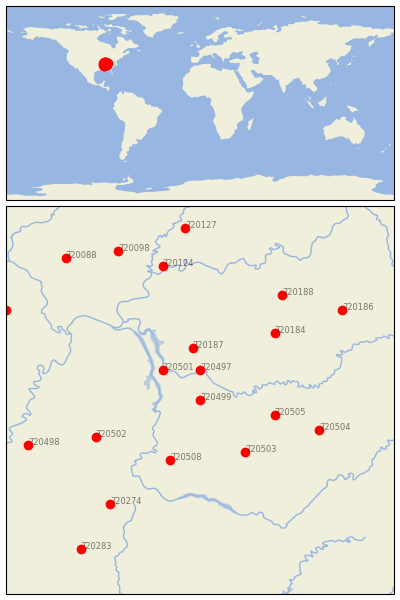
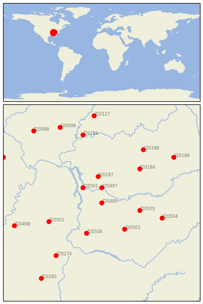

DICKSON [USA]

 
| Neighbour | Name | Country | Distance | Lon/Lat | Years |
|---|
| 720499 | DICKSON | USA | 0 | -87.4, 36.1 | 1885-2019 |
| 720497 | CLARKSVILLE WWTP | USA | 44 | -87.4, 36.5 | 1854-2019 |
| 720501 | DOVER 1 W | USA | 63 | -87.9, 36.5 | 1893-2019 |
| 720187 | HOPKINSVILLE | USA | 78 | -87.5, 36.8 | 1893-2019 |
| 720505 | MURFREESBORO 5 N | USA | 92 | -86.4, 35.9 | 1883-2019 |
| 720503 | LEWISBURG EXP STN | USA | 94 | -86.8, 35.4 | 1888-2019 |
| 720508 | WAYNESBORO | USA | 96 | -87.8, 35.3 | 1884-2019 |
| 720184 | BOWLING GREEN RGNL A | USA | 134 | -86.4, 37.0 | 1878-2019 |
| 720502 | JACKSON EXP STN | USA | 137 | -88.8, 35.6 | 1891-2019 |
| 720504 | MC MINNVILLE | USA | 150 | -85.8, 35.7 | 1872-2019 |
| 720188 | LEITCHFIELD 2 N | USA | 183 | -86.3, 37.5 | 1893-2019 |
| 720274 | BOONEVILLE | USA | 189 | -88.6, 34.7 | 1889-2019 |
| 720124 | MT VERNON | USA | 205 | -87.9, 37.9 | 1887-2019 |
| 720186 | GREENSBURG | USA | 215 | -85.5, 37.3 | 1890-2019 |
| 720498 | COVINGTON 3 SW | USA | 217 | -89.7, 35.5 | 1883-2019 |
| 720098 | MCLEANSBORO | USA | 242 | -88.5, 38.1 | 1882-2019 |
| 720127 | PRINCETON 1 W | USA | 256 | -87.6, 38.4 | 1884-2019 |
| 720088 | DU QUOIN 4 SE | USA | 264 | -89.2, 38.0 | 1886-2019 |
| 720283 | PONTOTOC EXP STN | USA | 265 | -89.0, 34.1 | 1889-2019 |
| 720297 | MARBLE HILL | USA | 267 | -90.0, 37.3 | 1891-2019 |